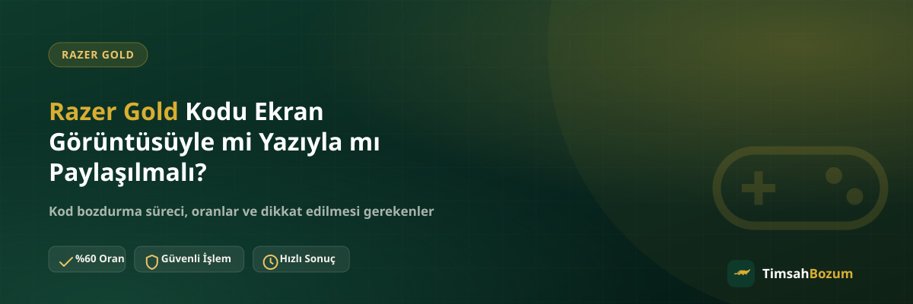

Razer Gold kodunu bozdurmak için WhatsApp'a yazdığında karşına çıkan ilk soru genelde şu olur: kodu ekran görüntüsü olarak mı göndermeliyim yoksa karakterleri tek tek yazsam yeterli mi? Bu küçük görünen tercih, aslında işlemin ne kadar hızlı ve sorunsuz ilerleyeceğini doğrudan etkiler. Bu yazıda iki yöntemin farkını, hangi durumda hangisinin daha güvenli olduğunu ve kodu paylaşırken dikkat etmen gereken noktaları anlatıyoruz.
Kod Paylaşımında İki Yöntem Arasındaki Fark Nedir?
Razer Gold kodu, genellikle 16-20 karakter arasında harf ve rakamın bir arada bulunduğu bir dizidir. Bu diziyi WhatsApp'a iletmenin iki yolu var: kartın veya ekranın net bir görüntüsünü göndermek, ya da karakterleri elle klavyede yazıp metin olarak paylaşmak. Her iki yöntem de teknik olarak kabul edilir, ama pratikte aralarında hata payı açısından ciddi bir fark var.
Kod Karakterleri Elle Yazılırken Neden Karışır?
Razer Gold kodlarında kullanılan font genelde büyük harf ve rakamları iç içe barındırır. Büyük "I" harfi ile küçük "l" harfi, "O" harfi ile sıfır rakamı, bazı durumlarda "S" ile "5" birbirine çok benzer görünebilir. Kodu elle yazarken bu karakterlerden birini yanlış seçmek, gönderdiğin bilginin gerçek koddan farklı olmasına yol açar. Sonuç olarak kod geçersiz görünür, bu da işlemi gereksiz yere bir tur geciktirir çünkü doğru bilgi yeniden istenir.
Ekran Görüntüsünün Avantajı Ne Zaman Ortaya Çıkar?
Ekran görüntüsü, kodu olduğu hâliyle, hiçbir yorumlama veya elle aktarma hatası olmadan karşıya iletir. Karşı taraf karakterleri senin yazman yerine doğrudan görüntüden okur, bu da yanlış bir karakterin işleme karışma riskini ortadan kaldırır. Özellikle uzun ve karmaşık kodlarda, ya da kodu ilk defa bozduruyorsan, ekran görüntüsü göndermek en güvenli ve en hızlı yoldur.
Yazıyla Paylaşım Hangi Durumda Yeterli Olur?
Kodu dikkatle kontrol edip her karakteri tek tek doğruladıktan sonra yazıyla paylaşmak da mümkündür. Ancak bu yöntem, kodu yazan kişinin karakterleri eksiksiz ve doğru aktardığından tam olarak emin olmasını gerektirir. Kodu birkaç kez okuyup karşılaştırmadan hızlıca yazıp göndermek, hatalı bir karakterin gözden kaçmasına neden olabilir. Bu yüzden yazıyla paylaşım bir seçenek olsa da, çoğu durumda ekran görüntüsü kadar güvenilir değildir.
Ekran Görüntüsü Çekerken Neye Dikkat Etmeli?
Görüntünün kodun tamamını, kırpılmadan ve net bir şekilde göstermesi gerekir. Kartın fiziksel bir ürün olması durumunda iyi ışıkta, parlama veya gölge olmadan çekilmiş bir fotoğraf tercih edilmeli. Dijital bir kod ekranda görünüyorsa, ekran görüntüsünün yakınlaştırılmış ve bulanık olmayan bir hâli gönderilmeli. Görüntüde kodun kenarları kesilmişse veya bir kısmı parmakla kapanmışsa, bu durum eksik bilgi olarak değerlendirilir ve tekrar görüntü istenir.
Hangi Yöntem Bozum Sürecini Daha Çok Hızlandırır?
Net bir ekran görüntüsü, tek mesajda ve tek seferde doğru bilginin ulaşmasını sağladığı için süreci genelde en kısa yoldan ilerletir. Yazıyla paylaşım da doğru yapıldığında aynı hızda sonuç verebilir, ama bir karakter hatası olduğunda düzeltme için ekstra bir mesaj alışverişi gerekir. Bu yüzden zaman kazanmak istiyorsan, elinde net bir görüntü varken bunu yazıya çevirmek yerine doğrudan göndermen daha pratik bir tercih olur.
Kodu Paylaşırken Başka Hangi Bilgiler Görünür Olmalı?
Kodun kendisi dışında, ekran görüntüsünde kartın veya kodun hangi hizmete ait olduğu da görünür olursa süreç daha hızlı teyit edilir. Kodu paylaşırken ayrıca hangi hizmeti bozdurmak istediğini (Razer Gold olduğunu) belirtmek, karşı tarafın bilgiyi doğru bağlamda değerlendirmesini sağlar. Bu küçük detay, özellikle aynı anda birden fazla kod veya bakiye türüyle ilgilenen kullanıcılar için karışıklığı önler.
Birden Fazla Kodu Aynı Anda Paylaşırken Hangi Yöntem Daha Pratik?
Elinde birden fazla Razer Gold kodu varsa, her birinin ayrı ayrı ekran görüntüsünü art arda göndermek yerine tüm görüntüleri tek bir mesaj akışında toplu şekilde paylaşmak süreci düzenli tutar. Kodları yazıyla paylaşmayı tercih ediyorsan, her kodu ayrı bir satırda ve hangi karta ait olduğunu belirterek yazman, karşı tarafın hangi kodu hangi işlemle eşleştireceğini karıştırmasını önler. Birden fazla kodu karışık şekilde, bazısı görüntü bazısı yazı olarak göndermek ise işlemi kolaylaştırmaz, tam tersine takip edilmesini zorlaştırır.
Bozdurma Süreci Nasıl İşler?
Kodu hangi yöntemle paylaşırsan paylaş, sonraki adımlar aynıdır: Razer Gold bozdurma hattımızdan kodunu iletirsin, güncel oranı teyit edersin, onay sonrası ödemen WhatsApp üzerinden görüşülen yöntemle yapılır. Üyelik, form doldurma veya kimlik belgesi istenmez, hesabına erişim talep edilmez. Razer Gold kod tabanlı bir hizmet olduğu için kısmi bozum yapılmaz, kodun tam değeri tek seferde değerlendirilir. Oranlar zamanla güncellenebileceği için işlem öncesi güncel oranı WhatsApp'tan teyit etmek en doğrusu.
İlgili Yazılar
- Razer Gold PIN Kodu Paylaşırken Güvenlik Önlemleri
- Razer Gold Kodunu Kaybedersem Ne Olur?
- Razer Gold Kodu Kullanılmışsa Ne Olur?
Elinde paylaşmaya hazır bir Razer Gold kodu varsa, ister net bir ekran görüntüsü ister dikkatle kontrol edilmiş bir metin olsun, WhatsApp hattımızdan yazarak güncel oranı öğrenip işlemini başlatabilirsin.